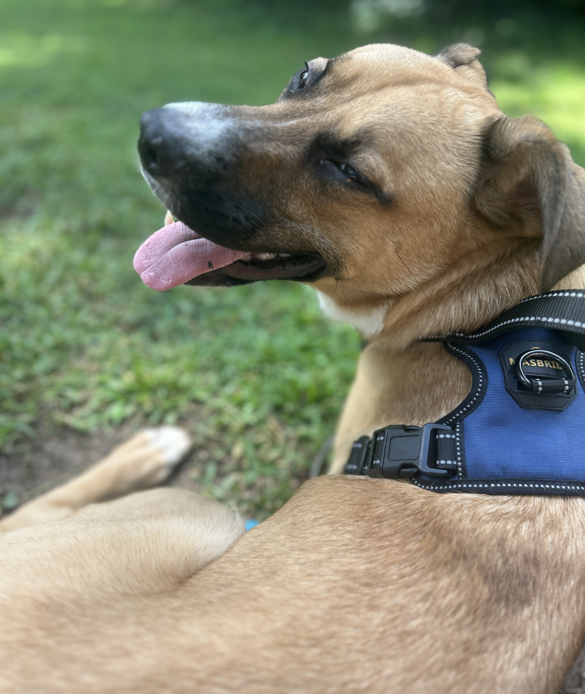

Background and Rehoming History

Cerberus is a high-energy and intelligent German Shepherd–Boxer mix who has experienced several living environments in his first year. He originally lived in a rural area with open fields, which allowed him space to run but offered little structure or positive reinforcement. His early training emphasized discipline over bonding, and he was primarily treated as a guard dog. Despite this, Cerberus remained eager for connection and responded quickly to kindness.
He later lived in a hotel for three to four months with his former owner and a secondary caregiver. Cerberus struggled with excess energy and the lack of consistency while confined indoors with limited stimulation. During this time, he formed a strong attachment to the caregiver who prioritized gentle handling and engagement.
Due to housing instability, Cerberus traveled to multiple states before being brought back to North Carolina. His transition was stressful, and he displayed signs of confusion and anxiety during attempts to place him in rescues or shelters. To avoid the risk of surrendering him to a shelter, a short-term boarding solution was arranged, where he received daily exercise, attention, and a chance to decompress.
As part of his ongoing adjustment, Cerberus is still learning to trust new people fully. He is being trained on leash reactivity. Adopters must be prepared to facilitate slow, structured introductions with unfamiliar people and to continue using positive reinforcement to help Cerberus build confidence and trust over time.
Cerberus is now in stable foster care. He’s thriving with routine, affection, and space to move. His story reflects his resilience and readiness to bond with those who provide a calm, structured environment. This background informs his current behaviors and helps shape the kind of home where he’ll continue to succeed.
|  |

|